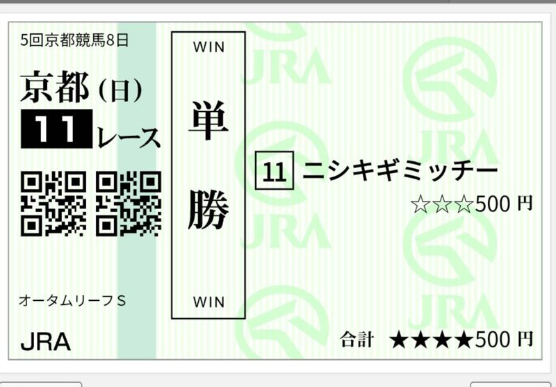
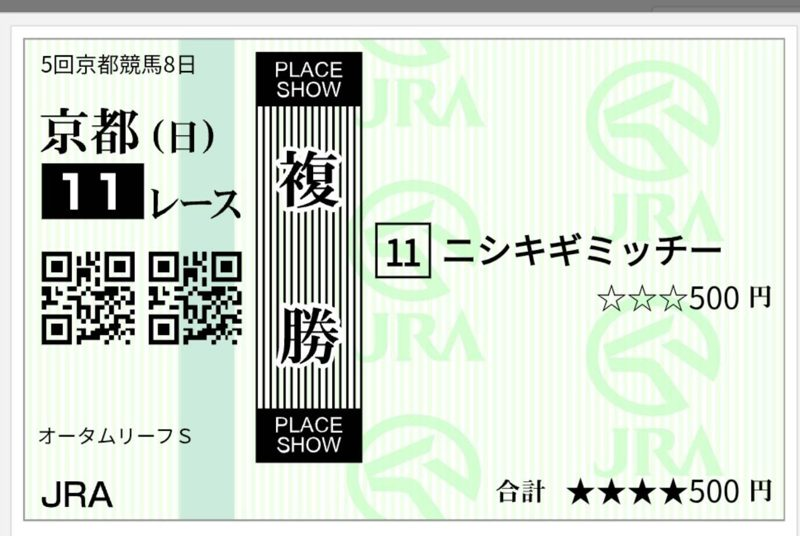

ジャパンカップの日が来ましたね。東京12R、15時40分です。
本命はマスカレードボール。3枠6番、ルメールです。花の山1.2に当たった馬で、エアに入っています。
去年はカランダガンの2着でした。アタマ差。勝ったカランダガンは2分20秒3のレコード勝ちです。今年も来ています。バルザローナで連覇を狙う構え。
クロワデュノールも去年4着。今年はリベンジがかかります。
マスカレードボールが今年こそ先着できるかどうか。一番楽しみなレースです。
今週の勝負レースは京都のオータムリーフS。ニシキギミッチーです。地方の勝負レースは高知9Rのワキノクイーンです。土曜のエアは3頭とも外れました。ファクタは高知のハピアーザンエバーが来てくれました。
馬券ブログ1456日目：オータムリーフS◎ニシキギミッチー×北村友一
■明日の馬券
京都１１Ｒ オータムリーフS １５：１５
１１ ニシキギミッチー 北村友一
(花の山1.2)
単勝・複勝 各５００円



花の山1.2の追加フィルタAに当たった馬です。人気より実力・改も重なっています。二つの裏付け。ここが今週の勝負どころかなと思っています。
地方の勝負レースは高知です。
高知９Ｒ Ｃ１ー３ １９：２０
１ ワキノクイーン 郷間勇太
(Mモグラ7.0・地方版)
単勝・複勝 各５００円
10月に1.4秒差の圧勝実績がある馬です。前走は先手を取り損ねて5着。人気より実力・改・地方版も重なっています。
■明日のエア馬券
| レース | ◎馬名 | 作戦名 |
|---|---|---|
| 京都2R 2歳未勝利 | エスヴェドラ | Mの法則27版1.0 |
| 京都2R 2歳未勝利 | ガランテリア | Mの法則27版1.0 |
| 京都3R 2歳新馬 | メイショウカサミラ | Mの法則27版1.0 |
| 京都9R 白菊賞 | マーゴットプレ | Mの法則27版1.0 |
| 京都10R 花園S | ロードヴォイジャー | 人生苦楽2.0 |
| 京都11R オータムリーフS | エコロアゼル | 人生苦楽2.0 |
| 東京4R 2歳未勝利 | ビップラージャ | Mの法則27版1.0 |
| 東京6R 2歳新馬 | ファインブレイヴ | Mの法則27版1.0 |
| 東京6R 2歳新馬 | ローズエクエス | Mの法則27版1.0 |
| 東京12R ジャパンC | マスカレードボール | 花の山1.2 |
| 高知10R C1ー2 | アリアルブラック | 花の山1.2・地方版＋人生苦楽2.0・地方版 |
| 高知10R C1ー2 | メイショウハマギク | Mモグラ7.0・地方版 |
| 佐賀9R ペガスス座特選 | クロスアヴァンセ | 花の山1.2・地方版 |
| 佐賀10R ホトトギス賞 | タイキマクスウェル | 花の山1.2・地方版 |
仮想購入額は単勝・複勝 各５００円です。
■明日のフォワードテスト
| レース | ◎馬名 | 作戦名 |
|---|---|---|
| 京都1R 2歳未勝利 | ハイウェイワン | Mの法則27版1.0 |
| 京都1R 2歳未勝利 | エコロルーク | Muse式・一鞍入魂 |
| 京都3R 2歳新馬 | ウインガウェイン | Muse式・一鞍入魂 |
| 京都4R 3歳以上1勝クラス | ワンダーイロネ | Mの法則27版1.0 |
| 京都4R 3歳以上1勝クラス | イッタレイッタレ | Muse式・一鞍入魂 |
| 京都5R 3歳以上障害未勝利 | ヤコブセン | Muse式・一鞍入魂 |
| 京都6R 2歳新馬 | リリークラウド | Mの法則27版1.0 |
| 京都7R 3歳以上1勝クラス | アイランド | Mの法則27版1.0 |
| 京都7R 3歳以上1勝クラス | メイショウオグマ | Muse式・一鞍入魂 |
| 京都8R 3歳以上2勝クラス | プレスバーン | Mの法則27版1.0 |
| 京都8R 3歳以上2勝クラス | ランツフート | Muse式・一鞍入魂 |
| 京都10R 花園S | ゲキザル | 花の山1.1＋Muse式・一鞍入魂 |
| 京都10R 花園S | スマートケープ | Mの法則27版1.0 |
| 京都11R オータムリーフS | ノーブルロジャー | ChatGPT式・能力評価＋Muse式・勝ち型再現 |
| 京都12R 京阪杯 | インブロリオ | Muse式・勝ち型再現 |
| 京都12R 京阪杯 | インビンシブルパパ | タイムランクA |
| 京都12R 京阪杯 | デアヴェローチェ | 実力馬・条件回帰 |
| 京都12R 京阪杯 | ヨシノイースター | 花の山1.1 |
| 京都12R 京阪杯 | フォーゲル | Mの法則27版1.0 |
| 京都12R 京阪杯 | エーティーマクフィ | ChatGPT式・能力評価＋人気より実力・改＋実力馬・休養明け＋忘れられた実力馬＋人気より実力（強サイン） |
| 東京1R 2歳未勝利 | ヤマニンスペッキオ | Muse式・一鞍入魂 |
| 東京2R 2歳未勝利 | シネファイル | Mの法則27版1.0 |
| 東京3R 2歳未勝利 | ドッグズノーズ | Muse式・一鞍入魂 |
| 東京4R 2歳未勝利 | エーアイクワイ | Muse式・一鞍入魂 |
| 東京5R 2歳新馬 | ジョンディミーレ | Mの法則27版1.0 |
| 東京6R 2歳新馬 | ラスリーズプレミア | Muse式・一鞍入魂 |
| 東京7R 3歳以上1勝クラス | ヒサエノオモカゲ | Muse式・一鞍入魂 |
| 東京8R オリエンタル賞 | アローメタル | Mの法則27版1.0 |
| 東京9R カトレアS | アルティシモ | 穴馬はまた穴開ける |
| 東京10R アプローズ賞 | ジェイエルキャリア | Muse式・一鞍入魂 |
| 東京11R ウェルカムS | カニキュル | タイムランクA |
| 東京11R ウェルカムS | スピンザブラッド | Mの法則27版1.0 |
| 東京12R ジャパンC | メイショウタバル | タイムランクA＋実力馬・休養明け＋忘れられた実力馬 |
| 東京12R ジャパンC | クロワデュノール | Genspark式・本命崩し＋タイムランクA |
| 東京12R ジャパンC | シェイクユアハート | 交互のリズム |
| 東京12R ジャパンC | カランダガン | Muse式・勝ち型再現＋タイムランクA＋人気より実力・改＋人気より実力（強サイン） |
| 東京12R ジャパンC | テアオ | ChatGPT式・能力評価＋Muse式・一鞍入魂 |
| 高知9R C1ー3 | テンドウ | 人気より実力・地方版＋人気より実力（強サイン）・地方版 |
| 高知9R C1ー3 | イルヴェント | 花の山1.1・地方版 |
| 高知10R C1ー2 | ジーティーハッピー | 人気より実力・改・地方版＋人気より実力（強サイン）・地方版 |
| 高知10R C1ー2 | ワンリオン | 交互のリズム・地方版 |
| 高知11R 浦戸湾特別 | ジーティーオウジャ | 人気より実力・改・地方版 |
| 高知12R ファイナルレース | ノアプレスリー | 人気より実力・改・地方版 |
| 高知12R ファイナルレース | マツリダショパン | 実力馬・範囲拡大・地方版 |
| 高知12R ファイナルレース | ブランカアンヘル | A（末脚の隠れた速さ）・地方版 |
| 高知12R ファイナルレース | マイネルサンテ | 花の山1.1・地方版 |
| 佐賀4R 鳥栖大賞 | ダオラダオラ | 前走逃げ損ね・地方版 |
| 佐賀9R ペガスス座特選 | タイプフェイス | 人気より実力・地方版 |
| 佐賀9R ペガスス座特選 | ハガクレノハタ | 人気より実力・改・地方版 |
| 佐賀9R ペガスス座特選 | ホットロッドスター | A（末脚の隠れた速さ）・地方版 |
| 佐賀10R ホトトギス賞 | デジタルサイオン | 人気より実力・改・地方版 |
| 佐賀10R ホトトギス賞 | テイエムヒショウ | 穴馬はまた穴開ける・地方版 |
| 佐賀11R SAGAリベFEVER14 | スマートピリカ | 花の山1.1・地方版 |
| 佐賀11R SAGAリベFEVER14 | ユイダイナソー | 人気より実力・改・地方版＋人気より実力（強サイン）・地方版 |
| 佐賀11R SAGAリベFEVER14 | フォードスピリット | 実力馬・条件回帰・地方版＋実力馬・範囲拡大・地方版 |
| 佐賀11R SAGAリベFEVER14 | ディスタービア | 穴馬はまた穴開ける・地方版 |
仮想購入額は単勝・複勝 各５００円です。
■今日の馬券成績
今日（11月28日）は馬券なしです。
■今日のエア馬券成績
| レース | ◎馬名 | 作戦名 | 着順 | 仮想払戻 |
|---|---|---|---|---|
| 京都3R 2歳未勝利 | フクノブルースカイ | Mの法則27版1.0 | 5着 | 0円 |
| 京都10R 東山S | フライングブレード | 花の山1.2 | 9着 | 0円 |
| 東京11R キャピタルS | キョウエイブリッサ | Mの法則27版1.0 | 6着 | 0円 |
■今日の予想ファクターフォワードテストの結果
今日のファクタは59件（作戦ごとに計数）で、仮想購入59,000円→仮想払戻45,500円、回収率77％でした。主な当たりは次のとおりです。
| レース | ◎馬名 | 作戦名 | 着順 | 仮想払戻 |
|---|---|---|---|---|
| 京都10R 東山S | セシリエプラージュ | Mの法則27版1.0 | 1着 | 6,300円 |
| 東京7R 3歳以上1勝クラス | カットソロ | Muse式・一鞍入魂 | 1着 | 6,100円 |
| 東京11R キャピタルS | カヴァレリッツォ | ChatGPT式・能力評価 | 1着 | 4,500円 |
| 京都11R 京都2歳S | ゴールデンプロミス | 人気より実力・改ほか | 1着 | 4,300円 |
| 東京4R 2歳新馬 | レイワブライト | Muse式・一鞍入魂 | 1着 | 3,000円 |
| 京都3R 2歳未勝利 | ボウアンドアロー | Muse式・一鞍入魂 | 3着 | 3,950円 |
| 高知11R 小雪特別 | ハピアーザンエバー | 人気より実力・改・地方版ほか | 1着 | 1,750円 |
仮想購入額は単勝・複勝 各５００円です。全件の記録は台帳に残しています。
■今年の成績
＜本年成績＞
中央 214戦26勝 292,400円→181,380円 -111,020円 62%
地方 20戦4勝 20,000円→17,250円 -2,750円 86%
合計 234戦30勝 312,400円→198,630円 -113,770円 64%
払戻"金"投資 108,020円→88,526円 -19,494円 -18.0%
■今年のエア予想
エア予想成績：31レース・的中12レース 仮想購入31,000円→仮想払戻26,150円 仮想回収率84.4%（本年成績には含みません）
■今年のフォワードテストの結果
中央、地方それぞれ回収率上位の作戦の戦績。
中央
｢ChatGPT式・能力評価｣ １戦１勝 １０００円→４５００円 ４５０％
｢Muse式・勝ち型再現｣ ２戦１勝 ２０００円→４３００円 ２１５％
｢人気より実力｣ ２戦１勝 ２０００円→４３００円 ２１５％
｢人気より実力・改｣ ２戦１勝 ２０００円→４３００円 ２１５％
｢Muse式・一鞍入魂｣ １６戦４勝 １６０００円→１５９００円 ９９％
地方
｢花の山1.1｣ １０戦１勝 １００００円→６６００円 ６６％
｢穴馬はまた穴開ける・地方版｣ ４戦１勝 ４０００円→１７５０円 ４４％
｢人気より実力・改・地方版｣ ４戦１勝 ４０００円→１７５０円 ４４％
｢Mの法則27版1.0｣ ４戦０勝 ４０００円→６５０円 １６％
｢C（鞍上強化）｣ １戦０勝 １０００円→０円 ０％
■明日の注目馬・POG馬
東京６Ｒ 2歳新馬 １２：１５ レジューノワール ルメール
POG指名馬の出走です。初戦の走りに注目しています。